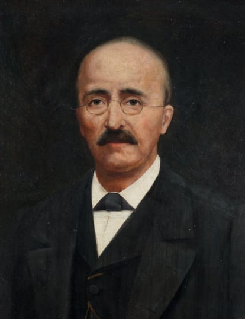

ИССЛЕДОВАТЕЛИ ТРОИ
Троя всегда будоражила ума ученых и энтузиастов. Мы познакомим вас с некоторыми из них.
-

Heinrich Schliemann,
worked on the excavation of Troy from 1870-1890.
Heinrich Schliemann was born in Germany into the family of an impoverished pastor. His energy, industriousness and an extraordinary aptitude for foreign languages enabled the young man to make a good career in a trading firm. He then carried on successful commercial activities in various countries, including Russia. Thanks to his business prowess, Schliemann gained financial independence and subsequently conducted excavations, published books and staged exhibitions with his funds.
His particular passion was travelling, which enabled him both to satisfy his entrepreneurial interests and to visit many places of interest. In 1864-1865 Schliemann travelled around the world and visited Africa, India, China, Japan and North and South America. Heinrich Schliemann turned to academia in 1866, becoming a student at the University of Paris. In 1868 he published "Ithaca, Peloponnese and Troy. Archaeological Investigations" ("Ithaka der Peloponnes und Troja: Archäologische Forschungen"), based on his travel notes about a trip to Greece. In 1869, the scientific council of the University of Rostock awarded him a doctorate.
Schliemann became famous for his archaeological research on Hissarlik Hill, where the legendary Troy was believed to have been situated. The research took place in 1870 - 1873, 1878 - 1879, 1882 - 1884 and 1888 - 1890. In 1874, Schliemann published his famous book "Trojan Antiquities" ("Trojanische Alterthümer"), which had an archaeological atlas. In 1881 he published a major work "Ilios: The City and Country of the Trojans", in 1884 - "Troy. Results of my recent excavations at the fortress of Troja, in the burials of heroes, Bunarbaschi and other places of Troas in 1882" ("Troja: Ergebnisse meiner neuesten Ausgrabungen auf der Baustelle von Troja, in den Heldengraebern, Bunarbaschi und anderen Orten der Troas im Jahre 1882") and posthumously - "Report on the excavations in Troja in 1890" ("Bericht über die Ausgrabungen in Troja im Jahre 1890").
He also worked successfully in Mycenae, Tirynthus and Orchomenus. In 1878, the book "Mycenae: A Narrative of Researches and Riscoveries of Mycenae and Tiryns", in 1881 - "Orchomenes. Orchomenos: Bericht über meine Ausgrabungen im böotischen Orchomenos" ("Report on my excavations in Boeotian Orchomenos"), and in 1886 - "Tirynth. Prehistoric Palace of the Kings of Tirinth. Results of Recent Excavations" ("Tiryns: Der Prähistorische Palast der Könige von Tiryns, Ergebnisse der neuesten Ausgrabungen"). He also attempted research on the island of Crete and Alexandria. Schliemann's work led to the discovery of the Anatolian culture of Troy and the Achaean culture of Mycenaean Greece. In the last third of the 19th century, the archaeological method was in its formative stages. Schliemann was one of the pioneers, the founders of field archaeology. It was his work that demonstrated the importance of stratigraphic observation. He was the first to apply several important techniques to archaeological work. Schliemann used photography to document science, engaged surveyors, archaeologists, biologists and chemists, kept a field diary and made sketches, examined and classified common and mass finds, such as fragments of simple pottery, to characterize the layers, and regularly published reports of his excavations in the form of extensive monographs with illustrations.
It is important to note that a national renaissance of Greece was taking place during those years, which was greatly aided by Schliemann's work and his enthusiastic attitude towards the history of this country.
-

Wilhelm Dörpfeld,
worked on the excavation of Troy in 1882–1894
Wilhelm Dörpfeld was born in Germany into the family of a famous teacher. He began his professional career as an architect, graduating from the Berlin Academy of Architecture and taking a job in Friedrich Adler's office.
His career as an archaeologist began in 1877 on the excavations of the famous Olympia sanctuary. Dörpfeld then spent many years working alongside Heinrich Schliemann: from 1882 at Troy, from 1884 to 1885 at Tirinth. It was he who completed the work at Troy in 1893-1894, already after Schliemann's death. Dörpfeld conclusively established that the layer from the time of the Trojan War was the so-called Troy VI. He also distinguished two more layers in Troy - VIII and IX (ancient and Hellenistic-Roman) - and found the continuation of the city in the valley, beyond the wall, which confirmed Schliemann's idea of a "greater Troy" with a citadel. In 1885-1890 Dörpfeld worked on the Acropolis of Athens, where he discovered the foundations of a large archaic temple, the Hecatompedon. In 1900-1913 he worked with Alexander Konce in Pergamon, and in 1931 he researched the Athenian Agora and again on the Acropolis.
Wilhelm Dörpfeld developed the stratigraphic method of archaeological research, which is based on a comprehensive study of all finds and architectural remains in a single layer. This method reveals the succession of stages of the archaeological monument. This is the method used by modern archaeologists.
Dörpfeld was a lecturer at the University of Jena and secretary of the German Archaeological Institute in Athens from 1886 to 1912. He co-authored Heinrich Schliemann's book on Tirinthus and also published a number of studies on ancient architecture and archaeology: "The Greek Theatre" ("Das griechische Theater", 1896), "Troja and Ilion" ("Troja und Ilion", 1902), "Ancient Ithaca. On the Homeric Question: Studies and Excavations on the Island of Leukas-Ithaka" ("Alt-Ithaka: Ein Beitrag zur Homer-Frage, Studien und Ausgrabungen aus der insel Leukas-Ithaka", 1927), "Ancient Olympia: data of studies and excavations on its history and ancient Greek art, the oldest sanctuary at Olympia" ("Alt-Olympia: Untersuchungen und Ausgrabungen zur Geschichte des ältesten Heiligtums von Olympia und der älteren griechischen Kunst", 1935), "Ancient Athens and its Agora" ("Alt-Athen und seine Agora", 1937-1939), "My work for the Greek Archaeological Society" ("Meine Tätigkeit für die griechische Archäologische Gesellschaft", 1937) and "Two Pre-Persian Temples under the Parthenon of Pericles, 1937" ("Die beiden vorpersischen Tempel unter dem Parthenon des Perikles").
-

Carl Blegen,
worked on the excavation of Troy 1932–1938 годах
Carl Blegen was born in Minnesota to a professor and a prominent figure in the Norwegian Lutheran Church. He studied at Yale University, then became a professor of classical archaeology at the University of Cincinnati.
Blegen worked extensively in Greece and was a fellow of the American School for Classical Studies in Athens. In 1965 he was the first to receive a gold medal from the American School in recognition of his achievements in archaeology.
Blegen conducted research at Troy with the University of Cincinnati from 1932-1938. He divided the main periods of Troy into more fractured ones and established that the Homeric epic speaks of the city of VIIa (Troy VIIa). The result of this work was the famous book "Troy and the Trojans", 1963.
In 1939 and from 1952 to 1966, Blegen explored the palace of Nestorius in Pylos. This was the most important work of his archaeological career. Its results were published in "The Palace of Nestor at Pylos in Western Messinia" (1966-1973). Blegen studied a very interesting variant of Mycenaean culture and discovered a large complex (several hundred) of clay tablets with Linear B script. These tablets helped to test Michael Ventris' version of the deciphering of Linear B script.
-

Manfred Korfmann,
worked on the excavation of Troy 1988–2005 годах
Manfred Korfmann was born in Germany. He was a professor at the Institute of Prehistory and Ancient History at the University of Tübingen.
In 1988, Korfmann obtained exclusive permission to excavate Troy. An international team of many people and institutions was established. A working group from Tübingen was responsible for prehistory and early history, a team from the University of Cincinnati studied the classical period. A thorough study of Hissarlik Hill resulted in the clarification of the chronology of Troy. Korfmann also discovered the lower city and found that Troy at the end of the Bronze Age occupied an area 15 times larger than previously thought. In addition, he discovered the most ancient period of the city's development - the Troy 0 layer - which made it possible to confirm that Troy had existed since the middle of the 4th millennium B.C.
In 1996, Korfmann helped to establish a historical national park on the castle mound, which was later included in the UNESCO World Heritage List. In 2001-2002 he initiated a major exhibition in Stuttgart entitled "Troia: Traum und Wirklichkeit" ("Troy: Dream and Reality").
-

Ernst Pernicka,
worked on the excavation of Troy 2006–2012 годах
Ernst Pernicka was born in Austria. Headed a group at the Max Planck Society Institute for Nuclear Physics in Heidelberg, then became a professor at the Institute for Geophysics and Planetary Physics at the University of California, Professor of Natural Science Archaeology at the University of Tübingen, since 2014 at the University of Heidelberg. He is engaged in archaeometry, technological research in archaeology, archaeometallurgy, geochemistry, thermoluminescent dating and chemical research on ancient ceramics. He participated in archaeological research in Germany, Western Anatolia and Romania.
At the excavations of Troy, he worked in an international team with Manfred Korfmann, and after his death, from 2006 to 2012, he led these archaeological investigations. In 2013, an international team led by American researcher William Aylward of the University of Wisconsin-Madison was going to continue the excavation of Troy using a new method of 'molecular archaeology', but the project was halted by the Turkish government.
-
Rüstem Aslan,
worked on the excavation of Troy from 2014
Since 2014, the study of Troy has been led by Rustem Aslan, Professor of Archaeology at Çanakkale University.
Aslan has worked for several years on an expedition led by Manfred Korfmann. He is currently continuing his research into the oldest layer, Troy 0, and is also seeking to identify the location of the ancient Bronze Age necropolis of Troy.
In 2018, the Troy Museum was opened within the historic park. It exhibits finds from Troy and its environs, which includes objects from the 'Trojan Gold' purchased for the University of Pennsylvania in 1966, given to the museum for long-term storage.
Aslan is a supporter of the idea of transferring all the finds made in Troy since its exploration and now preserved in 44 museums around the world to the new museum. In particular, he said this at a conference marking the opening of the "Troy: Myth and Reality" exhibition at the British Museum in 2019.